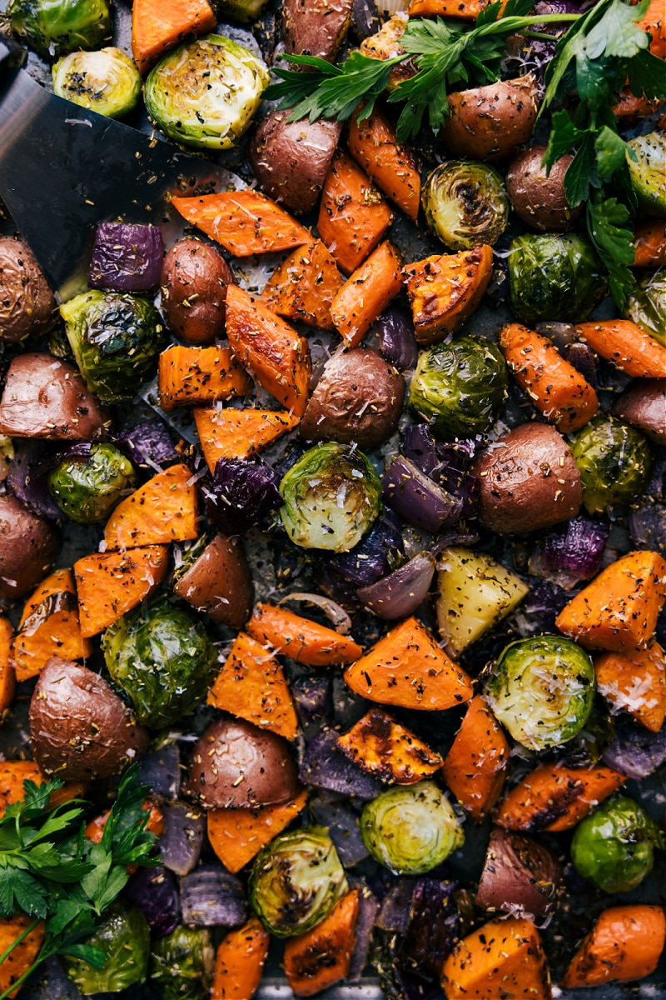

Roast Veggies

Description
These veggies are going to be your go to dinner item, meal prep choice,
and after school snack. Make your preferred dipping sauce (or buy one) to
make a delightfully delicious side or snack that you actually look forward
to.
Gone are the days where people will turn their nose up at brussel sprouts.
Your relative who served all their veggies steams and you had to choke
them down to be polite? As it turns out they justs didn't know what they
were doing. Show up at the next event with these and reteach how to each
these awesome plants!
Ingredients
-
Any thicker, heartier vegetable of your choice: potatoes, broccoli,
cauliflower, brussel sprouts
- Head of garlic (optional)
- Onion (optional)
- Olive oil, extra virgin is preferred.
- Salt
- Pepper
- Chili (optional)
-
Also optional, literally any spice mixture you want to make these babies
pop!
Steps
- Pre-heat an oven to 375°
-
Cut your vegatables into bite size pieces. Brussel sprouts in half and
try to keep them as whole as possible. Don't throw away those stray
leaves though! Those will crisp up and become the tastiest little
brussel-sprout-chips that you've ever tasted! If you are roasting a head
of garlic as well, leave it mostly whole but take a knife and "chop it's
head off". Slice through the top off so that each of the cloves has been
cut open through the paper skin.
- Quarter the onion
-
In a large mixing bowl, place all the vegetables except the garlic. Add
a tablespoon (ish) of oil and mix to coat all the vegetables.
-
spread all your oiled veggies onto a baking tray, then arrange so
they're not piled up. If they are too close to one another they will
steam rather than roast and they won't develop that incredible crunch
and flavor profile that we are craving! Then make sure to place all
veggies with a cut surface flat face down! That will increase the
surface area on the hot pan to make sure they develop a nice crust on
that face.
-
Once the veggies are placed on the pan, nestle the garlic bulb somewhere
that it fits and drizzle some more olive oil over it so that it pours in
the creases and crevasses and the clove skins.
-
Place in oven and roast for about 12 minutes. Keep an eye and take out
at your preferred level of cooked! You can make them darker by leaving
them in.